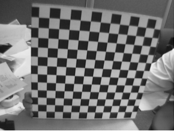
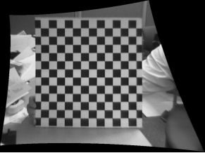

由于成像过程的复杂性，实际拍摄的图像存在多种畸变（纵横比畸变、透视投影畸变、光学畸变），畸变图像校正工具是对实际拍摄图像进行畸变校正，获取最终无畸变图像，便于后期处理。其实际应用效果如图1所示。
 
| 分类 | 参数名称 | 参数描述 |
|---|---|---|
| 属性窗口 | 是否彩图 | 输入图像是否是彩色图像。 |
| 校正类型 | 校正类型分为2种，投影和镜头畸变校正、镜头畸变校正。 | |
| 是否旋转 | 默认为“是”，仅在投影和镜头畸变校正有效。 | |
| 是否裁切 | 默认为“否”，仅在镜头畸变校正有效。 | |
| 开启并行运算 | 是否开启并行运算，选择是时，算法将开启OpenMp并行计算方式，可以提升计算速度，但可能出现耗时不稳定的情况，选择否时，算法将关闭OpenMp并行计算。 | |
| 线程数百分比 | 设置并行运算的线程数百分比，有效范围为 (0, 0.75]，对应表示(0%, 75%]百分比范围。 | |
| 图像窗口 | 输入图像 | 显示待校正的畸变图像。 |
| 数据链 | (彩色)畸变图像 | 输入待校正的畸变图像。 |
| 相机标定结果 | 靶标相机标定工具的输出，是相机成像模型的参数，反映了物体的图像尺寸与真实尺寸之间的关系。 | |
| 高级界面 | 无 | 无 |
| 分类 | 参数名称 | 参数描述 |
|---|---|---|
| 监视窗口 | 校正图像 | 执行校正后的图像结果。 |
| 彩色校正图像 | 执行校正后的彩色图像结果，供后序工具使用，同监视窗口的彩色校正图像参数。 | |
| 执行结果 | 工具执行结果。 | |
| 执行时间 | 工具执行时间。 | |
| 图像窗口 | 输入图像 | 显示工具执行结果图像，同监视窗口的校正图像参数。 |
| 执行结果 | 显示工具执行结果，执行成功显示“OK”，执行失败显示“NG”，同监视窗口的执行结果参数。 | |
| 数据链 | 校正图像 | 执行校正后的图像结果，供后序工具使用，同监视窗口的校正图像参数。 |
| 彩色校正图像 | 执行校正后的彩色图像结果，供后序工具使用，同监视窗口的彩色校正图像参数。 |
无
参见“\Samples\靶标相机标定工具.gvp”。